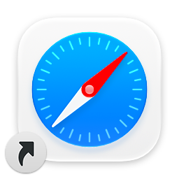
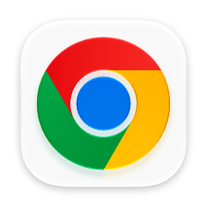
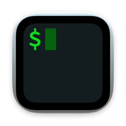
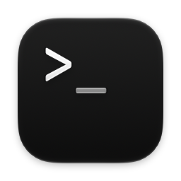
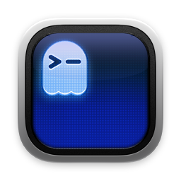
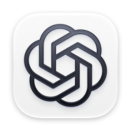
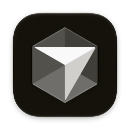
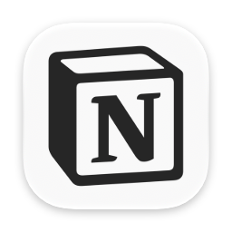
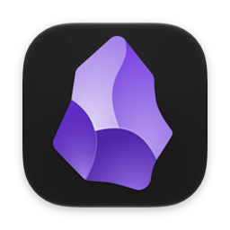

Agents
Every agent you pay for, in any terminal or app: Claude Code, Codex, Cursor, herdr.
- All Agents⌥⌘One list, sorted by who needs you. Jump to the exact pane or session.
- Next Agent⌥⌘]Go to the one that's waited longest. Again for the next.

Step back through recent apps like browser history, search every tab and session in one list, and jump to the AI agent that needs you. Free for Raycast.

Built for context switchers
Your AI tools change every month. The way you get around shouldn't.
Every agent you pay for, in any terminal or app: Claude Code, Codex, Cursor, herdr.
One search, whatever you use this month.

A Back button for your Mac.

How it works
Nothing runs in the background. Hopper reads what macOS and your apps already know, when you ask.
Connectors
Browsers, terminals, AI apps, and notes. Anything else by its windows.

Safari
Chrome
iTerm
Terminal
Ghostty
Codex
Cursor
Notion
Obsidian